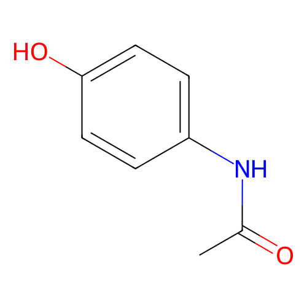

Spectrophotometric Method Timeline
1
Setup Sample
2
Auto-Zero
3
Wavelength Scan
4
Review Spectrum
5
QC Assay
✓
Optical Stabilization
✓
Cuvette: Quartz
○
Solvent Auto-Zero
○
Sample Solution
Instrument State
● IDLE
Monochromator λ
200 nm
Absorbance (A)
0.000 AU
Transmittance (%T)
100.0 %
Peak λmax
— nm
Path Length (l)
1.0 cm
Solvent
Water
Absorbance Spectrum A(λ)
Paracetamol
IDLE
0%
🎓 Spectrophotometric Analysis & Beer-Lambert Law
Perform a Blank Calibration (Auto-Zero) with solvent, then click "Measure Sample Spectrum" to record analyte absorption spectrum across 200–800 nm.
Theory: A = ε · c · l (Beer-Lambert Law)
Instrument Controls
🧪 Sample & Cuvette Parameters
Concentration (c):
15.0 µg/mL
💡 Mode Status: 🟢 Beginner Mode (1 solvent active). Switch mode in top header to unlock all 11 solvents!
Solution pH:
7.0 (Neutral)
Species Balance: Neutral pH 7.0
⚙️ Acquisition Method & Scan Parameters
🔬 Advanced Optical Model & Slit
Wavelength Calibration Shift (Δλ):
0.0 nm
Stray Light Level:
🧫 Laboratory Practice & Technique
Sample Clarity / Turbidity (Rayleigh λ⁻⁴):
Clear (0%)
⚗️ Binary Mixture Analysis (B.Pharm Assay)
SPECIES CO-ANALYSIS
C8H9NO2 (151.16 g/mol)
λmax: 243 nm

Chromophore: Phenolic aromatic ring